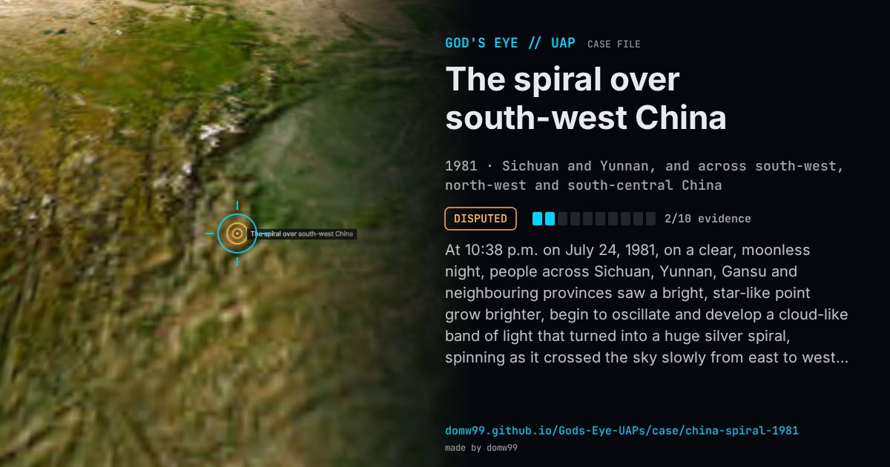

The spiral over south-west China

At 10:38 p.m. on July 24, 1981, on a clear, moonless night, people across Sichuan, Yunnan, Gansu and neighbouring provinces saw a bright, star-like point grow brighter, begin to oscillate and develop a cloud-like band of light that turned into a huge silver spiral, spinning as it crossed the sky slowly from east to west. It was in view for six or seven minutes. The sighting started a nationwide craze for UFOs in the newly opened China; the U.S. Air Force’s Foreign Technology Division translated a Hangtian article about it, “UFO incident causes sensation throughout half of China”, which weighed a meteor, an aircraft and a flying saucer. Liu Yan, the Purple Mountain Observatory astronomer who handled many of the letters the public sent about UFOs in the 1980s, made it the subject of his first article on them and concluded it was man-made.
Explanation
Newspapers first quoted astronomers blaming a meteor shower; the astronomer Liu Yan of the Purple Mountain Observatory, who analysed the eyewitness reports, concluded it was a man-made object about 650 km up, and an article in the space magazine Hangtian put it at about 500 km and rejected the meteor idea. A slowly turning spiral of light seen from half a country is what a rocket stage venting propellant in sunlight looks like (compare the Norwegian and Australian spirals), but no launch has been matched to this one.
What was seen
Shape: A star-like point that brightened and grew a spinning, silver, spiral-shaped band of light
Witnesses: Very many people across several provinces; the Hangtian article claims ten million
Duration: Six or seven minutes
Sources
- “UFO incident causes sensation throughout half of China” (FTD translation, DTIC ADA133326)
- The Black Vault — the translated Hangtian article
- Sixth Tone — The astronomer who calmed China’s UFO craze
Browse
- China
- 1980s
- Disputed
- Mass sightings
- Official government documents
- Many independent witnesses
- Lights and fireballs